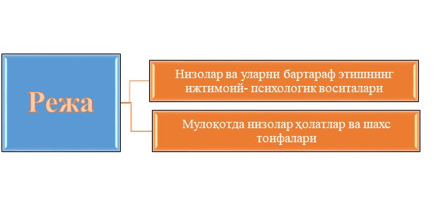

1-режа: Низолар ва уларни бартараф этишнинг ижтимоий- психологик воситалари
Хозирги давр талаби маънавий жихатдан етук, хар томонлама билимдон, мустақил фикрловчи шахсни шакллантириш бўлиб, бу муаммо шахслараро муносабат, яъни мулоқот жараёнида амалга оширилади. Шундай экан, кишиларни мулоқот жараёнида теран фикрлилик, хозиржавоблик, таъсирчанлик, сезгирлик ва мулоқот жараёнидаги билимдонликни шакллантириш ва ривожлантириш мухим ахамият касб этади.
Биринчи президентимиз И.А.Каримов айтганларидек « Бир сўз билан айтганда, инсон ўз тимсолида ҳам моддий, ҳам маънавий хусусият ва аломатларни мужассам этган ноёб хилқат, Яратганнинг буюк ва сирли мўъжизасидир. Шунинг учун ҳам унинг ички дунёси, унга ато этилган фазилат ва хислатларни охиригача англаш, тушунишнинг ўзи ўта мураккаб бир масала».
“Конфликт” сўзи 19 асрда лотин тилидан кириб келган бўлиб “конфликтус”- “тўқнашув” деган маънони англатади. Конфликт сўзини ишлатмасдан яшаш мумкин, лекин конфликциз яшаш мумкин эмас. Балки келишмовчилик, тўқнашув, курашиш, можаро ва шу каби сўзларни барчасини умумлаштириш мақсадида бу сўз ишлатилса ажабмас.
Орамизда бирор марта конфликт ва зиддиятга тушмаган инсон бўлиши мумкин эмас. Шунинг учун ҳам «агар сизнинг хаётингизда конфликт бўлмаса томирингиз уришини текшириб кўринг» деган ибора ишлатилади. Бунинг хулосаси эса конфликт - бу ҳаётимиздаги воқеа-ҳодиса сингари оддий ҳолдир. Бундан ташқари агар оилада , ишхонада ёки давлатда конфликтлар бўлмаса, бу айнан шу эрда тинч осойишта хаётда ўсиш, ривожланиши тўхтаганлигини билдиради. Шунинг учун бу конфликтларни ўрганиш ва уни юзага келганда бартараф этиш кераклиги ва ҳаётимизни равнақига унинг салбий таъсирини ўтказмаслигига ҳаракат қилиш керак.
Низоларнинг ижтимоий-психологик сабабларига инсонларни шартли ўзаро харакатда бўлиши натижасида, уларни ижтимоий гурухларга киришишлари натижасида юзага келадилар.
Шахснинг ўз-ўзи билан юзага келадиган конфликти психологик конфликтларнинг ичида энг қийини ҳисобланади, яъни у инсоннинг ички дунёсида рўй беради. Бундай конфликтлар билан инсон ҳар доим тўқнаш келади. Бундай конфликтлар конструктив характери жиҳатидан шахснинг ривожланишининг муҳим ожараёнларидан ҳисобланади. Лекин деструктив ички конфликтлар шахс учун жиддий хавф туғдиради, оғир кечинмаларга яъни стресслар натижасида, энг охирги нуқтага - суицидга олиб келиши мумкин. Шунинг учун ҳар бир инсон учун ички конфликтларнинг аниқ сабабини, уларни бартараф қилиш йўлларини билиш муҳим ҳисобланади.
Ички зиддият –бу шахснинг ички психологик дунёсининг зиддиятидир.
Бундай зиддият оғир кечинмалар шаклида ўтади. У қуйидаги специфик ҳолатларда кузатилади: қўрқиш, депрессия, стресс, кўпинча ички зиддият неврозга айланади. Ички зиддиятни ҳар доим ҳам аниқлаш осон эмас, баъзан инсон ўзи ҳам шу ҳолатдалигини сезмайди.
Ички зидият ҳақида турли олимлар ўзларининг асосий психологик концепцияларини келтиришган: З.Фрейдга кўра, инсон табиатан зиддиятга моил бўлиб, шахснинг ички зиддияти эрос ва танатоснинг ўзаро кураши натижаси. Бу кураш З Фрейдга кўра инсоннинг туйғуларини, амбивалентлиги ижтимоий борлиқ қарама-қаршилиги билан кучаяди ва можаро ҳолатига боради.
З.Фрейд ўзининг назариясида нафақат ички зиддиятрарни балки ҳимоя меҳанизмини очади. Асосий механизм деб сублимацияни хисоблайди, яъни инсонларнинг сексуал энергиясини бошқа фаолиятларга йуналтирилиши, шу билан бирга унинг ижодиётига. Бундан ташқари Фрейд проекция, рационализаторлик, сиқиб чикариш, регрессия механизмларини ҳам олға сурган.
Альфред Адлернинг қониқмаслик назариясига кўра шихснинг характери беш ёшида шаклланади. Бу даврда у нохуш факторлани таъсирини узида ҳис қилади. Булар ўз навбатида унда ўзи билан қониқмаслик туйғусини пайдо бўлишига сабаб бўлади. Кейичалик эса бу ҳолат унинг харакатлари, фаолияти, дунёқараши ва бошқаларда намоён бўлади. Шу билан шахснинг ички зиддияти намоён бўлади. Адлер нафакат шахснинг ички зиддиятини шаклланиш механизмини, балки бу зиддиятларни ечиш йулларини кўрсатиб берган(ўз-ўзидан қониқмаслик компенсацияси).
Олим Карл Юнг экстраверсия ва интроверсия таълими келиб чиқишини таъкидлайди, 1921 йилда чоп этилган “Психологик типлар” китобида инсон типологияси ҳақида аниқ далиллар келтирган. Инсон типологиясини К.Юнг 4та функция бўйича ажратади: фикрлаш, ҳис-туйғу, сезиш ва ички сезги. Ҳар бир функция икки йўналишда амалга ошади: Экстраверсия ва итроверсия. Бундан келиб чиқиб шахсни куйидаги типларга бўлиш мумкин: мутафаккир-экстраверт, мутафаккир-интроверт; ҳис қилувчи-экстраверт; интуитив-экстраверт; интуитив-интроверт.
Шундай қилиб, экстраверт ташқи оламга асосланган. Унинг ички дунёси - ташқи дунёси асосида қурилади. Интроверт учун унинг ички ҳиссиётлари муҳим ўрин тутади. Экстраверт шахснинг ички низоларига кўпроқ таянган ҳолда амалга ошади.
Конфликтнинг олдини олиш институтлар орасида бизнинг шароитимизда оила ва маҳалланинг роли ўзига хосдир. Инсондаги дастлабки ижтимоий тажриба ва ижтимоий хулқ элементлари айнан оилада, оилавий муносабатлар тизимида шаклланади. Шунинг учун ҳам халқимизда “қуш уясида кўрганини қилади” деган мақол бор. Яъни, шахс сифатларининг дастлабки қолиплари оилада олинади ва бу қолип жамиятдаги бошқа гуруҳлар таъсирида сайқал топиб,такомиллашиб боради.
Бизнинг ўзбекчилик шароитимизда оила билан бир қаторда маҳалла ҳам муҳим тарбияловчи – ижтимоийлаштирувчи роль ўйнайди. Шунинг учун бўлса керак, баъзан одамнинг қайси маҳалладан эканлигини суриштириб, кейин хулоса чиқаришади, яъни маҳалла билан маҳалланинг ҳам фарқи бўлиб, бу фарқ одамлар психологиясида ўз аксини топади. Масалан, битта маҳалладан яхши келин чиқса, айнан шу маҳалладан қиз қидириб қолишади. Яъни, шу маҳалладаги ижтимоий муҳит қизларнинг иболи, ақлли, сариштали бўлиб этишишларига кўмаклашган.
Масалан, айрим маҳаллаларда саҳар туриб кўча ешикларни супуриш одатга айланган ва барча оилалар шу удумни бузмайдилар. Шунга ўхшаш нормалар тизими ҳар бир кўча – маҳалланинг бир-биридан фарқи, афзаллик ва камчилик томонларини белгилайди, охиргилар эса шу маҳаллага катта бўлаётган ёшлар ижтимоийлашувида бевосита таъсирини кўрсатади.
Яна бир муҳим ижтимоийлашув ўчоқларига мактаб ва бошқа таълим масканлари киради. Айнан шу эрда ижтимоийлашув ва тарбия жараёнлари махсус тарзда уйқуклаштирилади. Бизнинг ижтимоий тасаввурларимиз шундайки, мактабни биз таълим оладиган, бола билимлар тизимини ўзлаштирадиган маскан сифатида қабул қиламиз. Лекин аслида бу ер ижтимоийлашув тарбиявий воситаларда юз берадиган маскандир. Бу ерда биз атайлаб ташкил этилган, охирги йилларда жорий этилган “Маънавият дарслари”, “Этика ва психология” каби тарбияловчи фанларни назарда тутмаяпмиз. Гап ҳар бир дарснинг, умуман мактабдаги шарт – шароитлар, умумий муҳитнинг тарбияловчи роли ҳақида.
Масалан, дарс пайтида ўқитувчи бутун диққати билан янги дарсни тушунтириш билан овора дейлик. Унинг назарида фақат дарс, мавзунинг мазмуни ва ундан кўзланган мақсад асосийдай. Лекин аслида ана шу жараёндаги ўқитувчининг ўзини қандай тутаётганлиги, кийим-боши, мавзуга субъектив муносабати ва қолаверса, бутун синфдаги ўқувчиларга муносабати ҳамма нарсани белгиловчи, ижтимоий тажриба учун муҳим аҳамиятга ега бўлган омилдир.
Шу нуқтаи назардан ўқувчилар диди, кутишлари ва талабларига жавоб берган ўқитувчи болалар томонидан тан олинади, акс ҳолда эса ўқитувчининг таъсири фақат салбий резонанс беради. Худди шундай ҳар бир синфда шаклланган муҳит ҳам катта роль ўйнайди. Баъзи синфларда ўзаро ҳамкорлик, ўртоқчилик муносабатлари яхши йўлга қўйилган, гуруҳда ижодий мунозаралар ва баҳслар учун қулай шароит бор. Бу муҳит табиий ўз аъзолари ижтимоий хулқини фақат ижобий томонга йўналтириб туради. Конфликтлар ҳар бир ижтимоий институтда бўлиб ўтадиганидек, таълим муассасаларида ҳам турли кўринишдаги низолар юзага келади.
Педагогика соҳасининг асосий мақсади, ҳар томонлама баркамол шахсни мақсадли шакллантириш ва ривожлантиришдан иборат бўлиб, фаолиятнинг асосий моҳияти ҳам ижтимойи тажрибани етказиб бериш ва ўзлаштришига йўналитирлгандир. Шунинг учун айнан шу ерда педагог, ўқувчи, ва ота-оналар учун зарур бўлган руҳий барқарорликни таъминловчи ижобий ижтимоий-психологик шароитлар бўлиши даркор.
Конфликтларнинг асосий кўринишлари: ўқувчи-ўқувчи;
Бундай конфликтларнинг асосий сабаби- ўсмирни синф жамоасида (микрогуруҳ)да етакчи ўринни эгаллашга харакат қилиши, унинг тажовузкорлиги ва қўполлиги (оилавий муносабатлардаги аномал ҳолат ва ўқитувчи-ўқувчилар ўртасидаги ўзаро муносабатлари асосий манба бўлади). Ўсмир конфликтларини умуман таг-туги билан йўқ қилиб юбориш мумкин эмас. Таълим муассасасида мақсадли амалга оширилаётган ўсмирнинг ижтимоилашуви жараёни кечиши – аввалам бор маънавий, аҳлоқий қадриятларни ўзлаштириши билан биргаликда ўқувчилар ўртаситдаги низоларнинг интенсивлиги ўзгаради. Маънавий етук шахсларда низо жараёнида ҳулқи ўзгаради.
Низоларни олдини олишда таълим муассасасида мавжуд бўлган ички қоидалар(одоб-аҳлоқ меъёрлари) муҳим роль ўйнайди. Ўқувчиларнинг конфликтли ҳулқига ўқитувчининг шахси, катта таъсир қўрсатади. Тадқиқотлар натижасига кўра биринчи муаллимнинг мулоқот қилиш услуби ва педагогик тактикаси ўқувчиларга синфдошлари ва ота-оналари билан шахслаларо муносабатларига сезирарли таъсир кўрсатиши мумкин экан. (О. Г. Осадько, 1993).
Ўқувчилар ўртасида бўлиб ўтадиган низоларни бартараф этишда албатта ўқитувчи иштирок этиши зарур, вазиятдан келиб чиққан ҳолда низоларни ҳал этишда маъмурий чора ёки оддий ижобий маслаҳат бериш бўлиши мумкин.
Низо қилувчиларни хамкорликда бажарилувчи вазифалар бериш ёки син етакчи ўқувчиларни жалб қилиш орқали ҳам низони хал қилишда ижобий натижага эришиш мумкин. Ўқувчи-ўқитувчи ўртасидаги низо. М. М. Рыбакованинг(1991), фикрича ўқитувчи ва ўқувчи ўртасидаги куйидаги конфликтларни ажратилади:
v Фаолият конфликти ўқитувчи ва ўқувчи ўртасида ўқув вазифаларини бажаришдан бош тортиши ёки уни яхши бажармаслик натижасида юзага келади. Баъзан ўқитувчи томонидан ўз фанини ўзлаштиришга талабни юқори қўйиши ва унинг натижасида баҳолаш орқали жазо услубини қўллаши низоларга олиб келади, бу эса ўз навбатида ўқувчирнинг билиш фаолиятига бўлган қизиқишларини пасайишига ҳам олиб келади.
v Педагогик муаммоларни педагог томонидан тўғри хал этилиши: чунки мактаб бу жамиятнинг кичик кўриниши бўлиб, у ерда ўқувчилар шахслаларо муносабатлардаги меъёрларни ўзлаштиришади.
v Конфликт иштирокчилари(ўқитувчи-ўқувчи) турли ижтимоий мавқега эга бўлиб уларнинг хулқ-атворлари шу асосда белгиланади.
v Иштирокчиларнинг хаёт тажрибалари турлича бўлганлиги сабабли конфликтларни хал қилинишида хатоларга йўл қўйиш даражаси ҳам турлича бўлишини келтириб чиқаради.
v Низони турлича қабул қилиниши (низо ўқитувчи назари билан ва ўқувчи назари билан турлича ифодаланади)
v Низоларни хал қилишда ўқитувчи томонидан қўйилган хатолар, яна бошқа муаммоларни келтириб чиқаради ва энди бунга бошқа ўқувчилар ҳам қшилишади ёки иштирок этишади.
Педагогик жараёнда низони олдини олиш уни хал қилишдан кўра самарилироқ хисобланади. Низоларни ижобий хал қилишда педагогга ўқувчининг ота-онаси билан бўлган ўзаро муносабатлари мухим ўрин тутади.
Ўқитувчиларга низоларни бошқаришда куйидаги маслахатлар берилади:
v Ўз хис-туйғуларингизни бошқарган холда, ўқувчиларга объектив муносабатда бўлиш ва уларнинг нуқтаи-назарини хам сабр-тоқат билан эшита олиш. - Ўқувчиларга нисбатан ижобий танқид воситаларини қўллаш.
v Ўқувчи шахсини хақорат қилмаслик, балким унинг хатти-харакатини танқид қилиш керак.
v Иложи бориша ўқувчини синфдан ташқарига хайдамаслик;
v Иложи борича маъмуриятга мурожат қилмаган хлда муаммоларни хал қилиш. Агрессияга-агрессия билан жавоб бермаслик, чунки сиз педагогсиз.
v Ўзингизга ва бола шахсига хатолар қўйиш учун хуқуқ бериш имконияти – чунки фақат хеч нарса қилмайдиган инсонларгини хатога йўл қўйишмайди.
v Низолардан қўрқмаслик керак, аксинча уларни хал қилишда ижобий ёндошишни ўз маъсулиятингизга олишни ўрганинг.
Юқорида айтиб ўтилган муаммоларни бартараф этишда, бугунги кунда ижтимоий - психологик тренингларни кенг қўлланилмоқда. Сўровномалардан маълум бўлишича Европа мамлакатларида психологик тренингни қўллаш, ишлаб чиқариш корхона ва ташкилотларда 80-85 % ташкил қилар экан. Ижтимоий психологик тренинг психологик таъсир методи сифатида жаҳон амалиётида кенг қўлланиб келинмоқда. Ижтимоий психологик тренинг шахслараро бир-бирини тушуниш мулоқотнинг эмпатив потентсиалини ошириш ички муаммоларини ҳал этишга имкон туғдиради. Кенг маънода ижтимоий-психологик тренинг (ИПТ) деганда гурухлар билан ишлашнинг фаол услубларига асосланган психологик таъсир амалиёти тушунилади. Шу билан бирга билим беришнинг ўзига хос шаклларини қўллаш, муомала борасидаги малака ва кўникмалар, ўзини ривожлантириш ва назорат қилиш кабилар ҳам назарда тутилади.
«Тренинг» тушунчаси инглизча «ўргатиш», «машқ» деган маънони англатиб, ижтимоий психологик тренинг- бу турли ижтимоий фаолият соҳаларига шахсни тайёрлашдан иборат бўлиб, бунда асосий эътибор шахс ёки яҳлит гуруҳнинг мулоқот ёки коммуникатив соҳасидаги билимдонлик даражасини мақсадга мувофиқ тарзда ошириш жараёнини акс эттиришдир. ИПТ бу ўз хулқи ва гурухдагиларнинг хулқига муносабат билдирган ҳолда фаол ўқитиш ва психологик таъсир кўрсатишнинг услубларидан биридир. Бундай гурухларда иштирокчи ўзига бўлган бошқаларнинг муносабатини, гурух рахбарининг муносабатини кўра олиши учун максимал қулай шароит яратилган бўлади.
2-Режа. Мулоқотда низолар ҳолатлар ва шахс тоифалари
Ўз вақтида Банопарт Наполеон шундай ёзган экан: “Қилич билан ҳар нарса қилиш мумкин, фақат унинг устига ўтириб бўлмайди”. Бу фикрида у кўпинча инсонлар ўртасида бўлиб турадиган низоларни, зиддиятларни назарда тутган экан. Чунки тоталитар ёки диктаторлик бошқаруви шароитида зиддиятларнинг бўлиши табиий бўлиб, унинг ягона ечими - узил-кесил уни ҳал қилиш чораларини излаш бўлган. Лекин демократик муносабатлар шароитидаги раҳбар ҳамда унинг қўл остидагилар ўртасида ёки ходимлар ўртасида келиб чиқадиган низолар ёки зиддиятларнинг табиати ва моҳияти бироз бошқача бўлади.
Аввало шуни эътироф этиш лозимки, инсоний муносабатларнинг ҳар қандай тизимида ҳам фикрларнинг ранг-баранг бўлиши ва улар ўртасида фарқ бўлиши муқаррар холдир. Лекин ана шундай фикрлардаги фарқни салбий ҳолат деб ҳисоблаб бўлмайди.
Нима сабабдан меҳнат жамоаларида турли хил низолар келиб чиқади. Бунинг бир неча сабаблари бор:
v алоҳида шахс ва жамоатчилик манфаатларининг мос келмаслиги;
v айрим алоҳида жамоа аъзолари хатти-ҳаракатларининг ижтимоий, группавий нормаларга зид келиши (тартибсизлик, интизомнинг бузилиши, маҳсулотдаги брак, ишнинг самарасизлиги ва б.қ.);
v жамоа аъзолари қарашларидаги номувофиқликлар;
v ишни ташкил этиш ва меҳнатга муносабатдаги фарқлар;
v ишчи-ходимлар ўртасидаги вазифаларнинг тўғри тақсимланмаганлиги ва ҳ-зо.
Демак, юқоридаги ҳолатларкўп ҳолларда қуйидаги турдаги низоли вазиятларни келтириб чиқаради:
1) таъсирнинг йўналишигакўра: вертикал ва горизонтал;
2) низони ҳал қилиш усулига кўра: антогонистик ва келишувга олиб келадиган низолар - компромисс;
3) намоён бўлиш даражасигакўра: очиқ, яшириш, потенциал, асосли;
4) иштирокчилар сонига кўра: шахсий, шахслараро, гуруҳлараро;
5) келиб чиқиш табиатига кўра: миллий, этник, миллатлараро, ишлаб чиқариш, ҳиссий-эмоционал.
Агар юқоридагиларни таҳлил қиладиган бўлсак, “горизонтал низолар” ҳаётда энг кўп учрайди. Бундай номуросозликлар аксарият ҳолларда ходимлар ўртасида айрим аъзоларнинг ишни яхшилаш, янги иш методларини жорий этиш, ахлоқ нормаларини ҳимоя қилиш, адолат учун кураш, илғор жамоа аъзоларининг шу ердаги маънавий муҳитни соғломлаштириш борасидаги фикрларини айримлар томонидан эътирозлар билан қабул қилиши натижасида рўй беради.
“Вертикал низолар” эса кўпинча раҳбар билан ходим ўртасида содир бўлиб, у бир қарашда лидерликка даъвогарлик, юқоридан тазъйиқ, пастдан туриб бошқа ходимлар ёки кучлар атрофида бирлашиш, сараланишлар оқибатида келиб чиқади. Бунда низонинг ташаббускори ва бош айбдори кимлигига боғлиқ тарзда уни хал қилиш усули танланади. Масалан, агар бошлиқ ходимнинг ишга масъулиятсизлигидан норозилиги туфайли пайдо бўлган низо билан унинг профессионализм борасида хадеб “Ўзини кўрсатаётганлигидан” норозилиги туфайли келиб чиқадиган низонинг ҳам фарқи бор.
Ҳар қандай низонинг асл туб моҳияти шундаки, унинг пайдо бўлиши айрим ўзгаришларга олиб келади. Бу ўзгариш ижобий ўзгаришларни келтириб чиқарса, уни конструктив, салбий оқибатлар ёки ходимлар қўнимсизлигини келтириб чиқарса, деструктив характерли деб атаймиз.
Низолар юзга келишида икки хил шарт-шароит мавжуд. Объектив шарт- шароитларга:
v Меҳнат қилиш учун шароитнинг ёмонлиги;
v Ходимлар орасида мажбурият ва вазифаларнинг нотўғри тақсимланганлиги;
v Бошқарув тизимидаги номутаносибликлар;
v Қўйилган вазифаларга мос профессионалликни ходимларда кузатилмаслиги;
v Ишчи ўринларининг етишмаслиги туфайли, ишларнинг тақсимланишидаги адолатсизлик;
v Меҳнатни ташкил этиш ва меҳнатга ҳақ тўлашда адолатсизлик холатларини кузатилиши.
Низолар юзага келишида субъектив шарт-шароитларга:
v Ишбилармонлик муносабатларида негатив йўлларни кўриниши;
v Шахслараро муносабатларда шахсга оид хусусиятларнинг намоён бўлиши.
v Муомалани ташкил этишда нўноқлик ва саводсизликнинг кузатилиши.
Ҳар бир низо алоҳида ҳодиса сифатида таҳлил қилинади, лекин уларнинг барчасига хос бўлган айрим қонуниятлар борки, уларга аввало унинг босқичлари ёки фазалари киради:
I. Низо олди босқич - конфронтация
II. Низонинг ўзи - компромисс ёки жанжал
III. Низодан чиқиш - мулоқот ёки диссонанс.
Демак, биринчи босқичда конкрет масала юзасидан фикрлар ёки қарашларда тафовут ёки қарама-қаршилик учун шарт-шароит пайдо бўлади. Томонлар ўртасига совуқчилик тушади, улар ўзаро келишолмай қоладилар, агар бунда ташқаридан қараганда, кўзга ташланадиган низо бўлмаса-да, ўша шахсларнинг ўзи бир-бирларига нисбатан муносабатларида буни ҳис қила бошлайдилар. Агар раҳбар айнан шу босқичда ҳодисага аралашиб, ўз вақтида оқилона қарорлар қабул қилолмаса, низо иккинчи босқичга ўтади.
Иккинчи босқичда ҳар иккала томон ўз қарашларини қарши томонникидан афзал билиб, очиқчасига бир-бирларини айблай бошлайдилар. Шу пайтда бошлиқ уларни келиштиришга уринади, агар бу “уриниш” алоҳида - алоҳида тарзда томонларни кабинетга чақириб рўй берса, вазият янада таранглашиб, зиддият чуқурлашиши, томонлар ўз холича бошлиқни ҳам ўзининг тарафдори қилиб, у ҳам низонинг иштирокчисига айланиб қолиши муқаррар бўлиб қолади.
Шунинг учун ҳам психология ҳар қандай низони томонларни бирга чақирган ҳолда ҳал қилиш ва компромисс қарорлар чиқаришга тайёр туришни тавсия этади. Бунинг учун раҳбарда низонинг тахминий образи ва уни ҳал қилишга бир нечта альтернатив ечимлар бўлиши керак. Бошлиқ бирор томонга кўпроқ ён боса бошласа ҳам, низонинг иштирокчисига айланади. Шунинг учун у холис тарзда низонинг келиб чиқиш сабаблари, кимларнинг манфаатига зид ишлар қилинаётганлиги, низо иштирокчиларининг шахсий ва профессионал хусусиятлари, кучли ва кучсиз томонларини таҳлил қилиб, низонинг “портрети” ни ўзи учун тасаввур қила олиши керак.
Шундан кейингина, томонларни чақириб, масалага янада ойдинликлар киритиб, томонларни келишувга чақиради. “Мен нима бўлганини, муаммо нимада эканлигини билиш учун Сизларни чақирдим” деб гап бошлаши ва ҳар бир томоннинг фикри муҳимлигини таъкидлаб, айни пайтда вазиятни қаттиқ назорат қилиши, унинг кечишини бошқариши лозим.
Низоли холатларда шахснинг қандай хулқ-атвор хусусиятларини намоён этишига қараб турли тоифаларини кузатилади. Ф.М.Бородкин ва Н.М.Коряклар низоли вазиятларда олти хил шахс типлари-тоифаларини кўрсатиб берганлар. Булар:
1. Намойишкорона тоифадаги низоли шахс.
2. Ригид тоифадаги низоли шахс.
3. Бошқариб бўлмайдиган тоифадаги низоли шахс.
4. Аниқликни талаб этадиган тоифадаги низоли шахс.
5. Низосиз тоифадаги низоли шахс.
6. Мақсадга йўналтирилган тоифадаги низоли шахс.
Намойишкорона тоифадаги низоли шахс хислатлари:
v Диққат марказда бўлишни истайди;
v Бошқалар кўз олдида яхши кўринишни хохлайди;
v Унинг бошқаларга бўлган муносабати, одамларнинг унга муносабатидан келиб чиқади;
v Осонгина юзаки низоларга берила олади;
v Турли вазиятларга осонгина мослашади;
v Эмоционал жиҳатдан фаол бўлиб, ақлан иш кўрмайди;
v Вазиятга қараб ишини ташкил этади ва хар доим ҳам амал қилмайди;
v Системали, оғир ишлардан ўзини олиб қочади;
v Низолардан чекинмайди, жанжалли вазиятларда ўзини ёмон ҳис этмайди;
v Кўпинча низоларга сабабчи бўлади, лекин ўзини ундай ҳисобламайди.
Ригид тоифадаги низоли шахс хислатлари:
v Шубҳага берилувчан;
v Ўзини баҳолаши ўта юқори;
v Доимо шахсан тан олинишини талаб этади;
v Вазият ўзгариши ва шароитларни инобатга олмайди;
v Тўғри ва тушунмайдиган, яъни мослашмайдиган;
v Қийинчилик билан атрофидагиларнинг фикрига киради, бошқаларнинг фикрига у қадар қўшилмайди;
v Бошқалар томонидан унга эътибор кўрсатилишини мажбуриятдек кўради;
v Бошқалар томонидан келишмаслик ёки қўшилмасликни хафагарчилик билан қабул қилади;
v Ўз ҳаракатларига нисбатан танқидий қарамайди;
v Ниҳоятда аразчи, ҳақиқий ёки арзимас ноҳақликларга ҳам таъсирчанликни намоён этади.
Бошқариб бўлмайдиган тоифадаги низоли шахс хислатлари:
v Ўзини етарли даражада назорат қилолмайди;
v Хулқини аниқ айтиб бўлмайди;
v Ўзини агрессив ва ниҳоятда зардалик билан кўрсатади;
v Аксарият холларда умумқабул этилган ижтимоий нормаларга риоя этмайди;
v Юқори даражада ўзини баҳолаш хусусиятига эга;
v Ўз шахсини таъкидланишини кутади;
v Омадсизликлар ва хатоларда бошқаларни айблашга мойил;
v Ўз фаолиятини режали ташкил эта олмайди ёки режаларини ҳаётга кетма-кетинлик билан жорий эта олмайди;
v Ўз мақсади ва шароитларини мослаштира олиш қобилияти етарли ривожланмаган;
v Ўтган тажрибадан келажак учун сабоқ чиқармайди.
Аниқликни талаб этадиган тоифадаги низоли шахс хислатлари:
v Ишга ниҳоятда жиддий ёндашади;
v Ўзига ниҳоятда юқори талаб қўяди;
v Атрофидагиларга юқори талаблар қўядики, бу уларга нисбатан гўёки таъқибдек туюлади;
v Юқори даражада хавотирланиш хислатига эга;
v Ҳамма нарсага ниҳоятда эътиборли;
v Атрофидагиларнинг танқидий фикрига катта аҳамият беради;
v Гоҳида дўстлари, танишлари билан муносабатларни узадики, бу гўёки уни хафа қилганлари оқибатидек туюлади;
v Гоҳида ўзи-ўзидан азият чекади, хатоларидан қайғуради, хатто гоҳида бу хатоларга нисбатан бош оғриқлари, уйқусизлик сифатида жавоб қайтаради;
v Ташқи жиҳатдан хиссиётларини ошкора этмасликни маъқул билади;
v Гуруҳдаги реал ўзаро муносабатларни яхши ҳис этмайди.
Низосиз тоифадаги низоли шахс хислатлари:
v Фикрлари ва қарашларида беқарор;
v Енгил ишониш хислатига эга;
v Ички қарама-қарши фикрларга эга;
v Ҳаракатларида бир қадар уйғунлик йўқ;
v Вазиятларда бир лаҳзалик ютуқларга таянади;
v Келажакни, истиқболни етарли даражада кўра олмайди;
v Лидерларнинг ва атрофидагиларнинг фикрига тобе;
v Муросага келишга интилади;
v Етарли даражада иродага эга эмас;
v Ўз хатти-ҳаракатлари оқибатларини ва бошқаларнинг харакатлари сабабларини чуқур ўйламайди.
Мақсадга йўналтирилган тоифадаги низоли шахс хислатлари:
v Низони ўз мақсадларига етишиш учун омил сифатида қара йди;
v Низоларни ҳал этишда фаол томон сифатида ўзини намоён этади;
v Ўзаро муносабатларда таъсир кўрсатишга мойил;
v Низоларда мақсадли ҳаракат қилади, томонларнинг холатини баҳолай олади, турли холатларни хисоблайди;
v Жанжалли вазиятларда муомалани самарали таъсир усулларини қўллай олади.
Бу низоли шахс тоифалари ўзаро муносабатларда намоён бўлар экан, қайси тоифа билан қандай ишбилармонлик муносабатларини ўрнатишга, музокаралар олиб боришга бевосита таъсир этади. Шунинг учун хамкорликка киришишда албатта кузатувчан бўлиш, ҳар бир ҳаракат мақсадини англаш малакаларини таркиб топтириш муҳимдир.
Мавзу юзасидан қисқача хулоса:
Мазкур мавзу мулоқот жараёнида ижтимоий психологик низоларни бартараф этиш йўллари, уларнинг турлари, намаён бўлиши хусусиялари каби масалаларга бағишланган. Аввало шуни эътироф этиш лозимки, инсоний муносабатларнинг ҳар қандай тизимида ҳам фикрларнинг ранг-баранг бўлиши ва улар ўртасида фарқ бўлиши муқаррар холдир. Лекин ана шундай фикрлардаги фарқни салбий ҳолат деб ҳисоблаб бўлмайди.Нима сабабдан меҳнат жамоаларида турли хил низолар келиб чиқади. Низоли холатларда шахснинг қандай хулқ-атвор хусусиятларини намоён этишига қараб турли тоифалари кузатилади каби муаммоларнинг илмий ечимига бағишланади.
Назорат саволлари ва мустақил ишлар мавзулари:
1.Низолар ва уларни бартараф этишнинг ижтимоий- психологик воситалари.
2.Мулоқотда низолар ҳолатлар ва шахс тоифалари.
3.Мақсадга йўналтирилган тоифадаги низоли шахс хислатлари.
4.Низосиз тоифадаги низоли шахс хислатлари.
5.Аниқликни талаб этадиган тоифадаги низоли шахс хислатлари.
6.Бошқариб бўлмайдиган тоифадаги низоли шахс хислатлари.
7.Ригид тоифадаги низоли шахс хислатлари.
8.Намойишкорона тоифадаги низоли шахс хислатлари.
Мавзу юзасидан ўқув топшириқ ва ижтимоий тренинглар
“Муаммоли вазият” жадвали
|
Муаммоли вазият |
Муаммоли вазиятнинг келиб чиқиш сабаблари |
Вазиятдан чиқиб кетиш ҳаракатлари |
«Авлодлар ўртасидаги низо».
Мақсад: Ўқувчиларда муомала маданиятини шакллантириш, шахслараро муносабатларни ижобий ривожлантириш.
Бунда уч киши иштирок этади - йигит, қиз ва катта ёшли одам. Авлодлар ўртасида «Эҳ, ҳозирги ёшлар...» қабилида тақлид уюштирилади. Йигит ва қизнинг вазифаси: имкон борича хушмуомалалик билан низодан қочиш. Жюри аъзолари ҳар бир ўқувчининг ҳаракатини баҳолаб боради.
«Орқадаги ёзувлар».
Иштирокчиларнинг орқаларига варақ маҳкамлаб қўйилади. Ҳамма иштирокчилар хонада хоҳлаган одамининг олдига бориб унинг орқасидаги қоғозга бу одамнинг нимаси ўзига ёқишини ёзиши керак. Вазифани мукаммаллаштириш ҳам мумкин. Масалан, ўша одамда нимани ўзгартиришни хоҳлашини ёзиши мумкин
Мавзу юзасидан адабиётлар рўйҳати:
1. Ғозиев Э.Г. Умумий психология. Тошкент. 2002.1-2 китоб.
2. Ғозиев Э.Г. Муомала психологияси. Т-2001.
3. Веденская Л.В, Павлова Л.А. Деловая реторика: учебное пособие для вузов.- М.:ИКЦ “МарТ”, 2004-512 с.
4.Немов Р.С. Практическая Психология Познание себя: Влияние на людей:Пособие для уч-ся-М:Гуманит. Изд.Центр ВЛАДОС, 2003, - 320 с.
6. www.psycho.all.ru